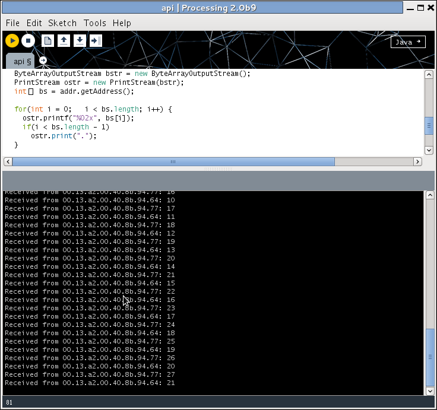

Posts about processing
API communications now working
A small sensor network now working, with two edge devices talking to a base station.

This step of the project accomplishes two things: is gets API networking mode working for the XBee radios, and makes sure the the interaction between software on the Arduinos and software running on the base station work too.
The data stream is simple enough: each Arduino counts up from 0 to 255 every 5s, passing the result up to the co-ordinator radio. A Processing program on the laptop collects the numbers and prints them. Naturally they become somewhat intertwined as their clocks aren't quite synchronised.
Actually this is enough to perform a simple radio survey to check transmission distance: we can move the radios away from the base station until they lose contact (nominally 100m for these 2mW radios, in reality probably substantially less), then move back into range, and then move one of the radios again to check that it meshes with the intermediate node in reaching back to the base station. This will also check that battery power works.

The software is quite straightforward, and the xbee-arduino library handles all the low-level communications -- although it's very low-level, fine for the experienced programmer but probably all but mystifying to anyone not used to this kind of software. The corresponding Java xbee-api library is slightly more friendly, but only slightly: they probably both need wrapping into a framework that hides the radio nastiness.
I think the biggest hurdle for this sort of system is the data format -- or, more precisely, the need (or desire, at least) to to use C at one end and Processing/Java at the other, which means that the data on the wire is being described twice. A framework approach could use (for example) JSON, although there'd still be a need to make sure it was compactly encoded and transmitted.